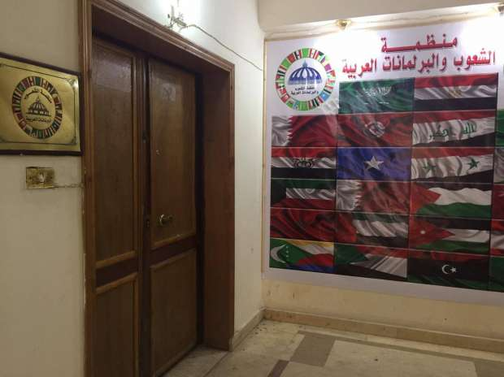
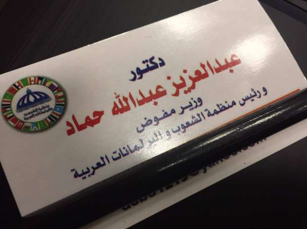

أحدث الأخبار
- المالية تعفي المطاعم غير السياحية من ضريبة القيمة المضافة بشروط
- "القضاء الإداري" يلزم الجامعة الأمريكية بتحصيل مصروفاتها بالجنيه المصري
- البورصة ترتفع بنسبة 0.52% في نهاية التعاملات
- إعادة فتح موانىء السويس بعد تحسن الأحوال الجوية
- محام: حفظ التحقيقات مع منى مينا في اتهامها بنشر أخبار كاذبة
- نجوى سالم .. كوميديانة انتهت حياتها بمأساة
- الأرصاد: طقس مائل للدفء الاثنين.. والعظمى في القاهرة 22
- مع إعداد الموازنة الجديدة.. ماذا يقدم لك كل "مليار جنيه" زيادة؟
الكوميديا السوداء.. تلميع الزعماء اسهل وسائل الانتشار الاعلامي
نشرت وسائل إعلام مصرية خبرا عن فوز قادة عرب بينهم الرئيس عبد الفتاح السيسي بعدد من الألقاب في استطلاع أجرته (منظمة الشعوب والبرلمانات العربية) شمل نصف مليون عربي حسب نص الخبر.
تعامل وسائل الإعلام مع الخبر الذي تجاهل تقديم اي معلومات عن المنظمة وتاريخ مؤسِسها ورئيسها عبدالعزيز عبدالله حماد، هو بطل الكوميديا السوداء لهذا الأسبوع.
في مطلع الأسبوع نشرت وكالة أنباء الشرق الأوسط الخبر الذي تضمن فوز السيسي بلقب "زعيم العرب" في استطلاع رأي أجرته (منظمة الشعوب والبرلمانات العربية) على مستوى مكاتبها في الدول العربية. ونقلت صحف محلية الخبر واحتفل مصريون على مواقع للتواصل الاجتماعي.
وبحسب الخبر أسفر الاستطلاع أيضا عن فوز الشيخ محمد بن زايد ولي عهد أبو ظبي بلقب "حكيم الأمة"، والسلطان قابوس بن سعيد بلقب "سلطان السلاطين" والشيخة فاطمة بنت مبارك بلقب "أم العرب".
الرجل المنظمة
بكتابة اسم المنظمة على محرك البحث جوجل يظهر موقعها الإلكتروني وبيانات صحفية منسوبة لها تنحصر صيغتها بين أفعال (تستنكر، تشجب، وترحب).
وعلى موقعها الإلكتروني تُعرف منظمة الشعوب والبرلمانات نفسها -في سطرين- بأنها "بيت العرب، وصوت العرب، أول منظمة عربية دولية مستقلة باسم الشعوب".
أسس المنظمة ويرأسها عبدالعزيز عبدالله حماد، الذي كَتبت صحف في 2015 أخبارا عن إدانته وصدور أحكام نهائية بحقه في تهم بينها "النصب وانتحال الصفة" لكنه قال إنه حصل على حكم بالبراءة.

رن جرس شقة في مبنى الهيئة العامة للاستعلامات في وسط القاهرة، وفتح رجل ثلاثيني الباب بزاوية ضيقة سدها بجسمه. عَرفتُ بنفسي وقلت إني أريد رقم هاتف أستطيع التواصل معكم عليه وبعض المعلومات عن المنظمة، فسألني بالعامية: "مين اللي بعتك؟".
وظهر عبدالعزيز حماد يعيد أكمام قميصه إلى وضعها قبل أن يشمرها ليتوضأ، وبدا منزعجا من وجودي وأخذ يوبخ الشاب الذي فتح الباب دون سبب واضح.
قُلت إني أريد معلومات تخص استطلاع الرأي فسأل بلهجة عنيفة: عرفتي الاستطلاع منين، وإيه مصدرك؟.
طلب أن اطلعه على الخبر على موقع وكالة أنباء الشرق الأوسط باعتبارها مصدري، لكنه لم ينتظر اجابتي وذهب ليصلي على يساري بمسافة قصيرة. ووقف الشاب على يميني ينتظر أن أريه الخبر على هاتفي المحمول. وبعدها أكد الشاب لحماد أنه رأى الخبر فعلا على موقع الوكالة لكن عرضه بالكامل يحتاج إلى الدخول بكلمة سر.
وقال حماد* إن منظمته تجري الاستطلاع كل عام "في مكاتبها المنتشرة في 21 دولة عربية عدا الصومال"، وإن استطلاع هذا العام شمل "ما بين 300 و500 ألف عربي" يمثلون عينات مختلفة من المجتمع على حد قوله.
المنظمة ومقرها الرئيسي وسط القاهرة، لم يتواجد فيه -أمس الخميس- سوى الشاب الثلاثيني وحماد، أمرٌ برره الأخير بأنه يعطي الخميس والجمعة أجازة للموظفين.
يعرف حماد نفسه بأنه "دكتور في الإعلام، ووزير مفوض، ورئيس منظمة الشعوب والبرلمانات، رئيس الجمعية المصرية لرجال الإعلام والبيئة والسكان والتنمية، يعمل في قطاع العقارات، ولديه مدارس خاصة، وهو صاحب المؤسسة العربية للخدمات التعليمية".
قال إنه حصل على الدكتوراه من أمريكا، من جامعة "كلوروفينيا (لا توجد جامعة بهذا الاسم- ربما نُطق خاطئ لاسم كاليفورنيا)"، وأشار حماد إلى دراسة على مكتبه عنوانها بالعربية، قال إنه كتبها عن أثر الإعلام على التجارة العالمية.
وبسؤاله عن لغة الرسالة، عدِلَ وقال إنه لم يحصل على الدكتوراه من أمريكا الدولة بل حصل عليها من الجامعة الأمريكية في القاهرة.

ورغم أنه يكتفي بكتابة وزير مفوض في بطاقة التعريف بنفسه، يقول حماد إنه وزير مفوض من الجامعة العربية، وانه يحمل بطاقة هوية في جيب سترته تقول ذلك.
في 31 مايو 2015 نشرت صحف محلية خبرا يفيد بإلقاء القبض على عبدالعزيز عبدالله حماد بتهمة "النصب".
وقال الخبر الذي استند على بيان من مديرية أمن المنوفية إن حماد (59 سنة) حاصل على الثانوية الأزهرية، "انتحل صفة دكتور في الإعلام من جامعة ماليزيا، واستخدم تلك الصفة في النصب على الآخرين".
وقالت مديرية أمن المنوفية آنذاك إن حماد "استخرج 8 بطاقات رقم قومي، تتضمن مهنا مختلفة منها: المستشار الإعلامي لسفارة ليبيريا بالقاهرة".
وعثرت الشرطة -حسب بيانها- بحوزة حماد على 4 كارنيهات (بطاقات هوية) لعدة وظائف منها: وزير مفوض، ورئيس منظمة البرلمانات العربية، وقاضي بالمجلس العربى للتحكيم الدولي.
وأبرزت مديرية الأمن أن حماد "اعترف، باستخدام الكارنيهات السابقة للنصب والاحتيال على المواطنين".
وأفاد البيان الرسمي أن حماد صدرت ضده أحكام نهائية واجبة النفاذ إلا أنه قام بالاحتيال وتغيير رقم البطاقة القومي، واستخرج صحيفة جنائية خالية من الأحكام المطلوب فيها للهروب من العدالة.
بمواجهة حماد بما كُتب عنه قبل عامين، قال إنه حصل على حكم بالبراءة من كل ما أسند إليه وأظهر صورة (مختومة بخاتم النسر) من الحكم".
وأوضح أنه كان يبيع في 2008 أراضي "وضع يد" لأعضاء جمعية هو رئيسها ومؤسسها سماها (الجمعية المصرية للإعلاميين).
وأضاف بالعامية "كل عضو كان يدفع 10 آلاف جنيه ياخد 5 فدان في طريق الواحات، وضع يد، مش مملوكة"
وتابع حماد: "كنا في الجمعية بناخد الأرض وضع يد، ونعملها مظاهر وضع اليد، ونسلمها للأعضاء وهم يروحوا يقدموا طلبات للدولة بتقنينها (الملكية)، ويشتروا من الدولة الفدان بخمسة آلاف جنيه بالتقسيط على 10 سنين".
*زارت محررة أصوات مصرية مقر المنظمة في وسط القاهرة دون ترتيب مسبق، وسجلت بعلم حماد الحوار الذي دار بينهما.


{kind=link}
تعليقات الفيسبوك